In this lesson, I learned that CSS, or Cascading Style Sheets, is used to design and style web pages to make them more attractive and organized. I realized how powerful CSS is in controlling the look of fonts, colors, layouts, and spacing. It separates the content (HTML) from the design, which makes web development easier and more efficient. I can apply what I learned by using CSS to improve the visual appeal of my own web projects and make them look more professional.
In this lesson, I learned that there are different types of style sheets: inline, internal, and external that allows us to apply CSS in various ways. I discovered that using an external style sheet is the most efficient since it can style multiple web pages at once. This lesson helped me understand how to organize and manage the design of a website better. I can apply this knowledge by linking my CSS files properly to keep my projects clean, consistent, and easy to update.
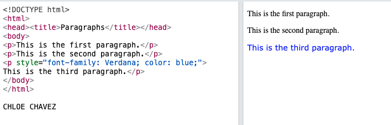
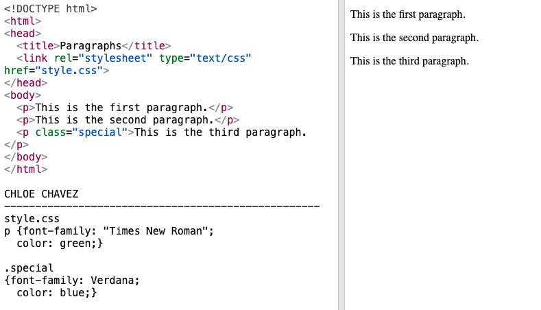
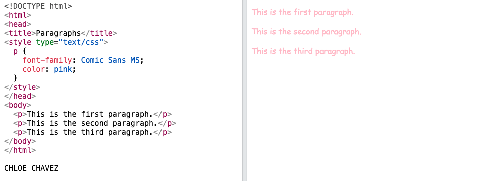
In this lesson, I learned how the display property controls how elements appear on a web page, whether they are shown in a line, stacked, or hidden. I now understand the difference between block, inline, and inline-block elements, and how each affects the layout. This topic is important because it helps me arrange content neatly and design web pages that look organized. I can apply this by choosing the right display type when styling sections, buttons, and images in my projects.
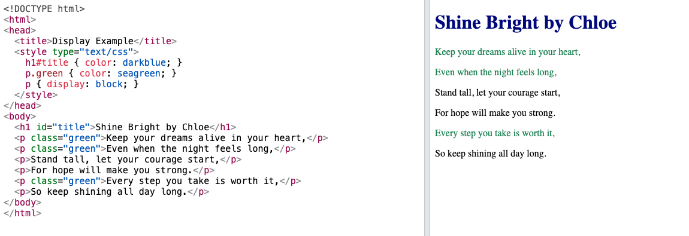
In this lesson, I learned that CSS classes allow us to style multiple elements using the same set of rules. By adding a class name in HTML and defining its style in CSS, I can make my code cleaner and easier to manage. This helps when I want different parts of my website to share the same design without repeating code. I can apply this by using classes to style buttons, text, and images consistently across my web pages.
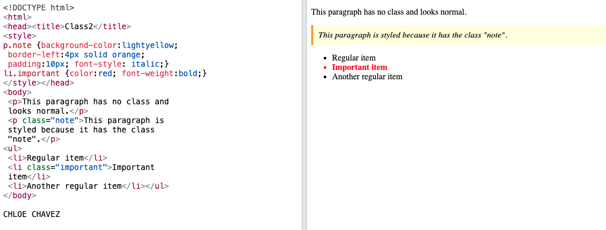
In this lesson, I learned that CSS selectors are used to target specific HTML elements so we can apply styles to them. I discovered that there are different types of selectors, such as element, class, ID, and universal selectors, each with its own purpose. This helps make web design more organized and precise. I can apply this knowledge by using the right selector for each element to control how my webpage looks and feels more efficiently.
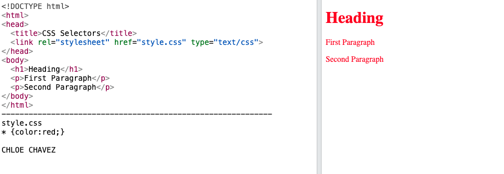
In this lesson, I learned how to use CSS properties like width, height, max-width, and max-height to control the size of elements on a webpage. Understanding how to set dimensions helps create a balanced and organized layout. I realized that proper sizing makes a website look cleaner and easier to read. I can apply this in real-life web projects by making sure my images, text boxes, and sections fit well together and look good on different screen sizes.
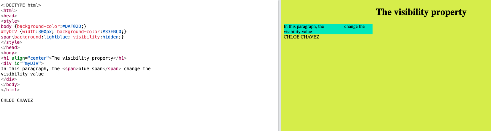
During the Intrams event, I learned the importance of teamwork, sportsmanship, and staying determined even when things get tough. I can apply these lessons in real life by working well with others, being patient, and giving my best in everything I do. I actively participated by cheering for my team and joining two sports, relay race and sack race, which made the experience more exciting. If I were to teach this to a classmate, I would explain that Intrams is not just about winning but about learning how to cooperate and respect others. Having events like this is important because they help students build confidence, friendship, and unity inside the school.
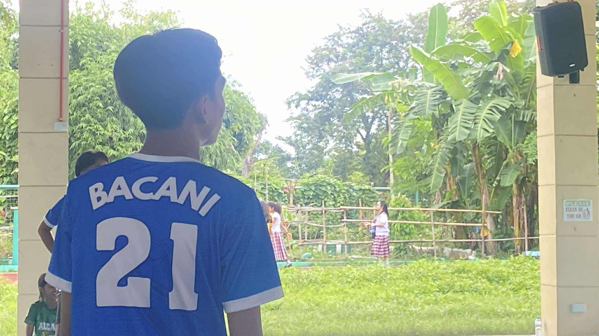
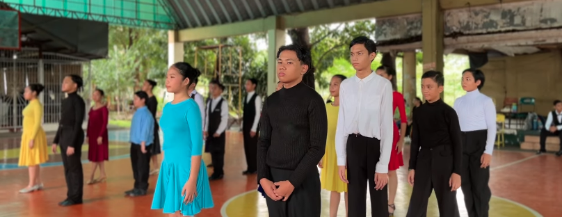
During the Science Month celebration, I learned how science connects to our daily lives and how creativity and curiosity can lead to discovery. I can apply what I learned by being more observant and thinking critically when solving problems in school or at home. I actively participated by joining the miniature paradise and appreciating the exhibits and experiments. If I were to teach this to a classmate, I would explain that Science Month helps us see how fun and useful science can be. Events like this are important because they encourage students to explore, innovate, and appreciate the role of science in improving our world.
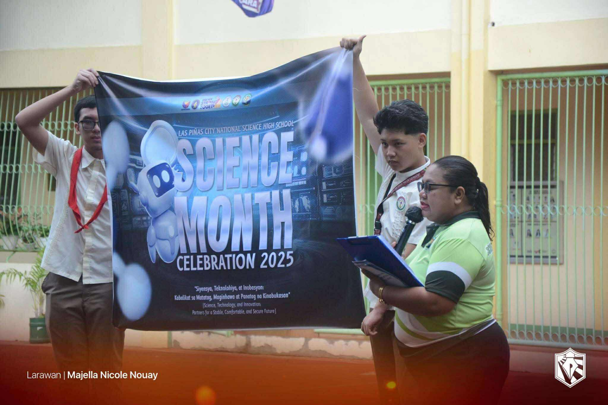
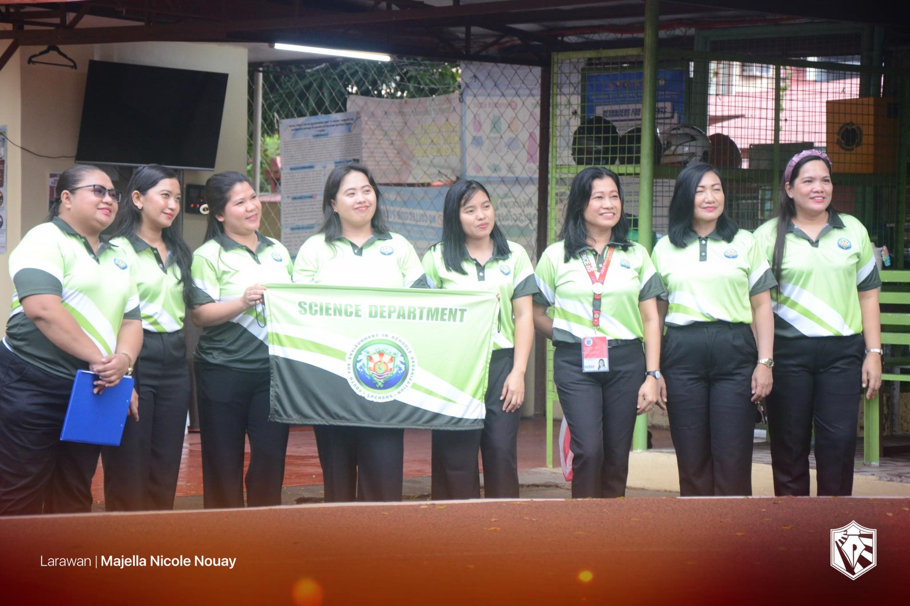
During the Buwan ng Wika celebration, I learned the importance of valuing and preserving our Filipino language and culture. I can apply what I learned by using Filipino more often in speaking and writing, and by showing pride in being a Filipino. I participated by joining the school activities, wearing Filipinana every Monday and supporting performances that highlighted our traditions. If I were to teach this to a classmate, I would explain that Buwan ng Wika reminds us to love our language because it connects us to our identity. Events like this are important because they help strengthen our appreciation for our culture and unity as Filipinos.
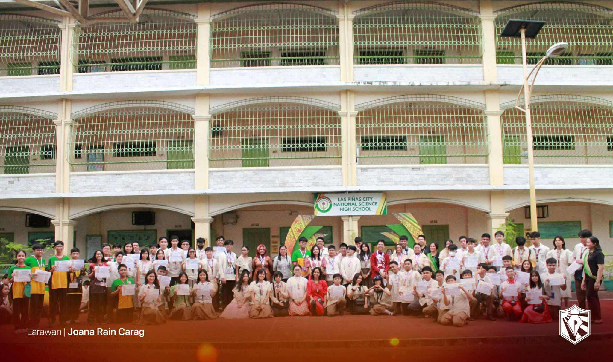
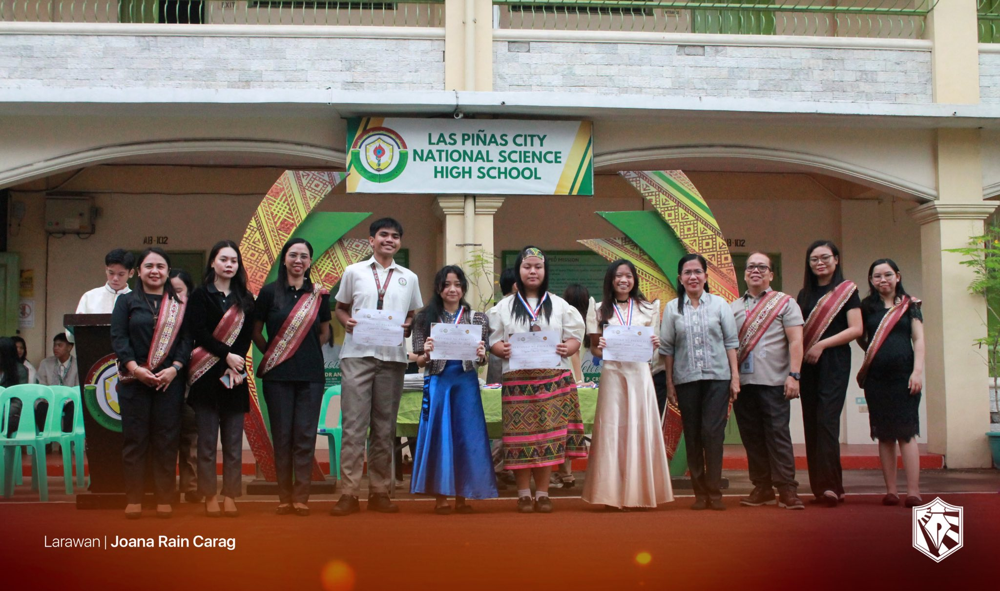
During the Teachers Day celebration, the most important thing I learned was how valuable and inspiring our teachers are in shaping our future. I realized that their hard work, patience, and dedication deserve to be appreciated every day, not just on special occasions. I can apply what I learned by showing more respect, gratitude, and cooperation toward my teachers in daily life. I actively participated in the event by joining the performances and helping prepare decorations to make the celebration meaningful. If I were to teach this topic to a classmate, I would explain that Teachers Day is about honoring those who guide and support us in learning and growing. It is important to have events like this because they remind us to value education and the people who make it possible.
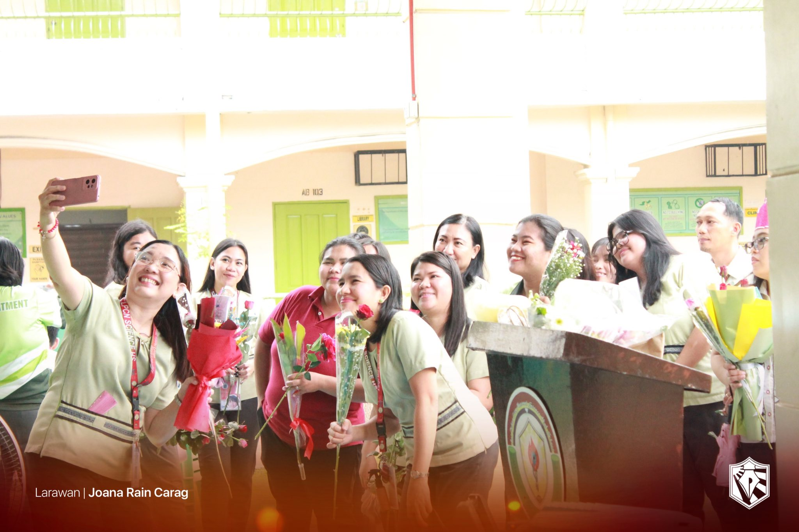
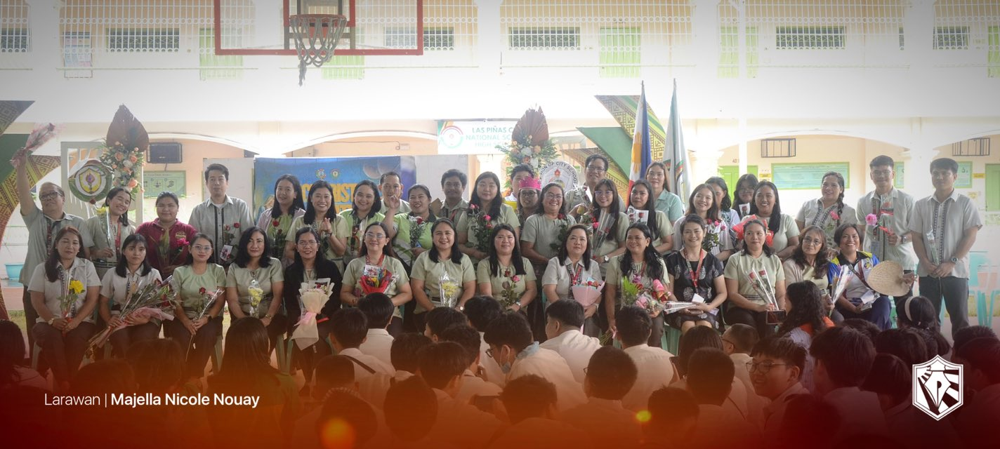
During the AP Month celebration, the most important thing I learned was the value of understanding our history, culture, and identity as Filipinos. It reminded me how important it is to appreciate our roots and the lessons from the past. I can apply what I learned by being a responsible and informed citizen who respects our countrys traditions and contributes positively to society. I actively participated in the event by joining activities that showcased Filipino culture and learning more about our heritage. If I were to teach this topic to a classmate, I would explain that AP Month helps us connect with our nations story and understand our role in its progress. It is important to have this kind of event because it strengthens our love for our country and promotes awareness of our national identity.
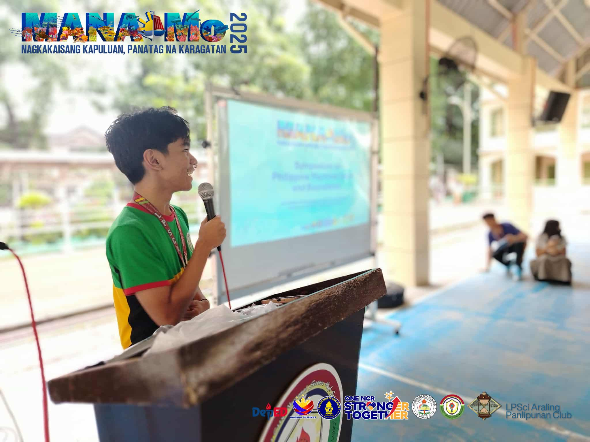
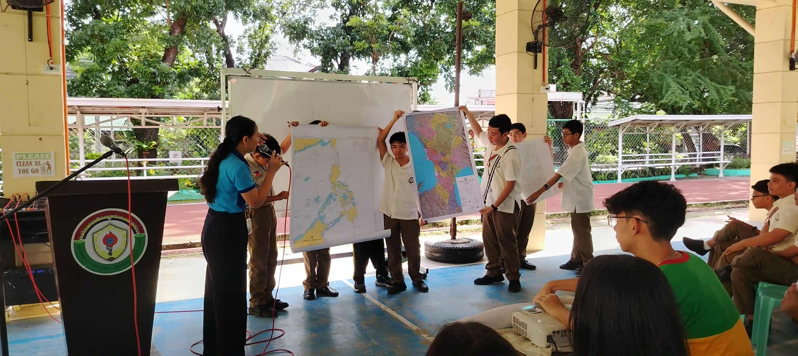